LIVE's Automation Input and Output Actions allow scenes to be triggered remotely and also allow the console to control external events such as outboard effects unit patch changes.
Input Actions
Input Actions allow a scene to be triggered from the console's Event Manager or an external event; either a GPI (General Purpose Input) or a specific MIDI message.
To enable Input Action triggering for a scene, touch one of the Input Action boxes to the left of the Scene Name in the scene list, so that the box is highlighted (turns cyan). (You can also touch the Input Actions button in the left side of the Automation detail dialogue to open the configuration page for that action.)
Now touch the button beneath the TYPE label and select GPIO, MIDI or Event from the submenu.
Please Note: L100 does not have local GPIO or MIDI ports; only Input/Output Actions using ipMIDI or remote stagebox GPIO and MIDI can be configured on L100.Selecting GPIO from the Input Actions TYPE list will display a detail dialogue like this:
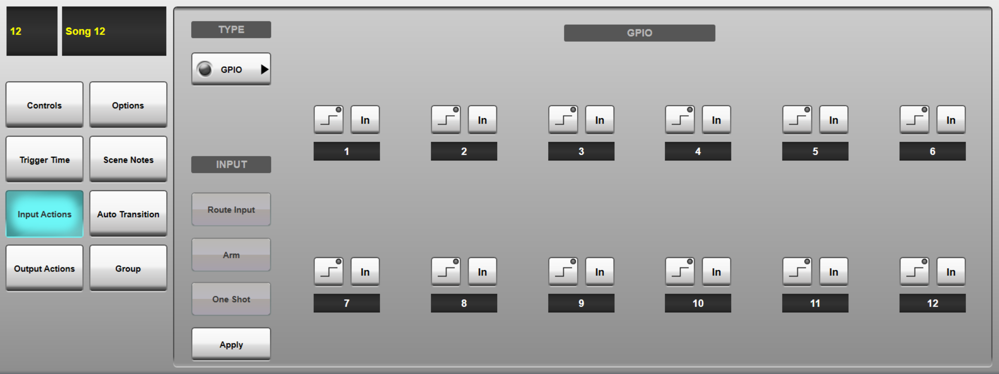
Press Apply to enable the Route Input button. Pressing Route Input will bring up a routing menu, showing all available GPI sources.
Selecting one of these and pressing Make will assign that GPI pin to the input action's first trigger. It is also possible to Make All on an entire GPI connection, which routes each GPI pin to a separate trigger.
The twelve sections that take up the main part of the GUI are the triggers. If one GPI pin has been routed, only the first one is relevant. Each trigger has two buttons:
The left button defines what kind of input transition will trigger the action: a rising edge or a falling edge.
The right button is used to switch each trigger In. Multiple GPI pins can be switched In for a single Input Action, so that the scene will fire from any of the routed GPI sources.
Selecting MIDI from the Input Actions TYPE list will display a detail dialogue similar to the one below:
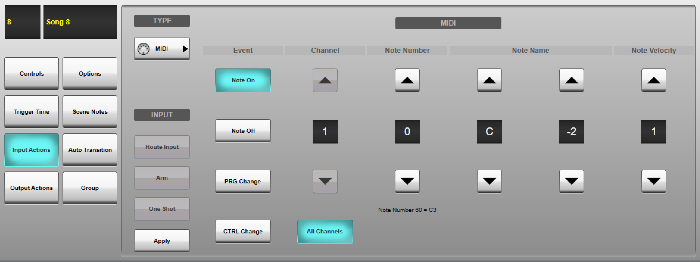
First, select the MIDI message type that you want to trigger the scene from; Note On, Note Off, PRG Change (Program Change) or CTRL Change (Control Change, also known as a MIDI CC message). Selecting Note On will display the page above with the following options:
- All Channels button: If active, listens for the defined message parameters on all MIDI channels. Deactivating this button will introduce another value field for entering a specific Channel number, between 1 and 16.
- Note Number: A numeric value between 0 and 127 representing the note (Note Number 60 = C3). Automatically updates the Note Name field described below.
- Note Name: The note name (C, C#, D etc.) and octave number (limited by the Middle C value described above). Automatically updates the Note Number field described above.
- Velocity: The note velocity value, between 1 and 127.
Selecting Note Off will display the same options as Note On, but excludes a Velocity parameter.
Selecting PRG Change will give you the option to specify a Program Number in the range 1 to 128 and to listen on All Channels or a specific MIDI Channel number.
Selecting CTRL Change will give you the option to specify a Control Number in the range 0 to 119, a Control Value in the range 0 to 127 and to listen on All Channels or a specific MIDI Channel number.
Note: If using ipMIDI for MIDI Input Actions this should be a different ipMIDI port to that used for Timecode, DAW Control and Events.Selecting Event from the Input Actions TYPE list will display a detail dialogue similar to the one below:
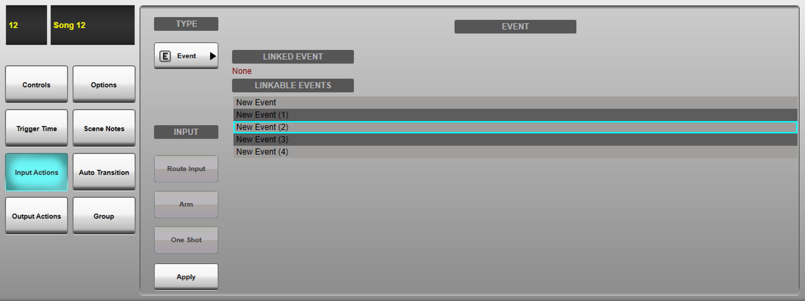
Select an event from the LINKABLE EVENTS list. Only events that have an Automation Output event source will appear in this list.
Touch Apply to apply your configuration. This will add an icon to the Input Action box in the scene list to indicate that the scene may be fired from an Input Action.
Important Note: After pressing Apply, you must choose a source for your incoming MIDI/GPI data. This could be the local ports on the rear of the control surface (if fitted), remote ports on a stagebox or ipMIDI via the Connectivity network port (refer to the ipMIDI section for configuration instructions). Press the Route Input button to open the appropriate dialogue. Select a source from those listed and press Make.
Press Arm to allow the Input Action to fire this scene.
If you want the Input Action to stay armed once it has been triggered, leave One Shot inactive; If you want the Input Action disarmed after it has been triggered once, activate the One Shot button. This will trigger the scene only the first time an Input Action condition is met.
You can now configure other Input Actions for that scene or other scenes. Up to three Input Actions can be defined per scene.
All Input Actions across all scenes can be Armed/Disarmed in bulk using the Arm All Input Actions and Disarm All Input Actions buttons in the Automation Controls page. These actions can also be triggered using the Event Manager.
To remove an Input Action from a scene, select None from the Input Actions TYPE list and press Apply.
Note: Input Actions operate on an 'OR' basis; the scene change will occur whenever any one of the Input Actions is triggered. Multiple GPIO inputs can be enabled within one Input Action, again operating on an 'OR' basis.
Output Actions
Output Actions allow the console to send messages to external devices when a scene is triggered; either through a GPO (General Purpose Output) or a specific MIDI message.
To create a GPO, MIDI or Event-driven trigger as part of a scene, touch one of the Output Actions boxes to the right of the Scene Name in the scene list, so that the box is highlighted (turns cyan). (You can also touch the Output Actions button in the left side of the Automation detail dialogue to open the configuration page for that action.)
Select the action type by touching the button beneath the TYPE label and select GPIO, MIDI or Event from the submenu.
The At button beneath the action type button can be used to select when the Output Action is fired in relation to the scene:
- At Fade Start : At the very beginning of the scene, as soon as it has been fired
- At Fade End : After all parameters have finished fading in/out
- At Scene End : On leaving the scene (i.e. upon firing the next scene)
The GPIO Output Actions detail dialogue looks similar to the GPIO Input Actions page (described above), with the addition of Test buttons for each GPO.
The routing works in the same way. With only one GPO routed, only the first trigger is relevant. When the Make All button has been used, each trigger corresponds to a routed GPO pin.
The lower left button defines what kind of GPO will be fired: a rising edge, a falling edge, a positive pulse or a 'negative' (+12V -> 0V -> +12V) pulse. The green 'light' in the corner of the button is green when the GPO is set to +12V and grey when 0V.
The lower right button is used to switch each GPO pin In. Multiple GPO pins can be activated for a single Output Action by switching them all In.
The Test button toggles the voltage on the GPO pin, allowing you to check that the output is working.
The MIDI Output Actions detail dialogue looks similar to the MIDI Input Actions page (described above) and features the same parameters for each MIDI message type:
- Note On messages have Note Number (0-127), Note Name and Velocity (1-127) parameters. These can be sent on All Channels if the button is active, or an a specific Channel (1-16) if the button is deactivated.
- Note Off messages have Note Number (0-127) and Note Name parameters. These can be sent on All Channels if the button is active, or an a specific Channel (1-16) if the button is deactivated.
- PGM Change messages have only the Channel number and Program Number (1-128) parameters.
- CTRL Change messages have the Channel number, Control Number (0-119) and Control Value (0-127) parameters.
The Event Output Actions detail dialogue looks similar to the Event Input Actions page (described above).
Select an event from the LINKABLE EVENTS list. Only events that have an Automation Input event destination will appear in this list.
Touch Apply to apply your configuration.
Important Note: After pressing Apply, you must choose a destination for your MIDI/GPO data. This could be the local ports on the rear of the control surface (if fitted), remote ports on a stagebox or ipMIDI via the Connectivity network port (refer to the ipMIDI section for configuration instructions). Press the Route Output button to open the appropriate dialogue. Select a destination from those listed and press Make.
Press the Arm button to enable the Output Action to be fired with this scene.
If you want the Output Action to fire each time the scene is recalled, leave One Shot inactive; If you want the Output Action disarmed after it has been triggered once, activate the One Shot button. This will send the Output Action only the first time the scene is recalled.
You can now configure other Output Actions for that scene or other scenes. Up to nine Output Actions can be defined per scene, all of which will be fired with the scene.
All Output Actions across all scenes can be Armed/Disarmed in bulk using the Arm All Output Actions and Disarm All Output Actions buttons in the Automation Controls page. These actions can also be triggered using the Event Manager.
Scene List
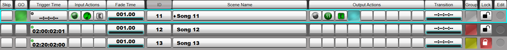
The configured Input and Output Actions will be displayed in the relevant columns of the scene list using the following icons:
| Selected Input/Output Action | |
| GPI/O: configured, not armed | |
| GPI/O: configured, armed | |
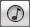 |
MIDI Note On: configured, not armed |
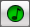 |
MIDI Note On: configured, armed |
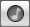 |
MIDI Note Off: configured, not armed |
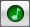 |
MIDI Note Off: configured, armed |
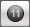 |
MIDI Program Change: configured, not armed |
| MIDI Program Change: configured, armed | |
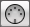 |
MIDI Control Change: configured, not armed |
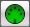 |
MIDI Control Change: configured, armed |
| Event: configured, not armed | |
| Event: configured, armed |
Links to Further Automation Help:
- Automation Overview
- Scene Time Functions
- Scene Names and Notes
- Scene Groups
- Function Filters
- Scene List Management
- Automation Preview Mode
Index and Glossary